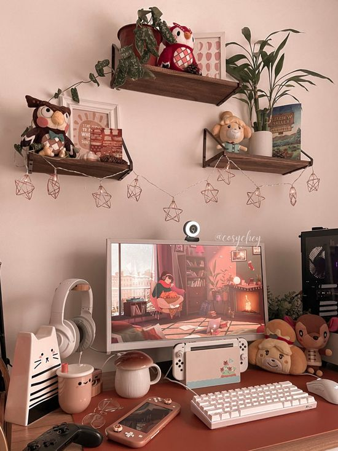

Cozy Girl Gaming
A growing majority of women are gamers
The popularity of the video game industry has surged over the last few years and the market for female gamers has increased dramatically. Research preformed by ZPULSE demonstratess that '91% of Gen Z and Millennial women play video games', including the use of mobile games and console games every week. Post pandemic, there’s been a noteable increase in the number of female casual gamers who play to 'destress, unwind, and partake in a healthy escape from reality'. Often choosing to play video games to escape the stressors of the real world. Thus, the RISE of the Cozy Girl Gamer has begun!
More Info Cozy Girl EditorialsWhat are cozy games?
These kinds of games encourage players to take things slow and enjoy the cozier things in life, hence the title. Also known as wholesome games, they typically offer a slower story pace and a more relaxed style of gameplay. In a nutshell: it’s all about feeling warm, comforted, and safe. These games are designed to be relaxing and meditative, often with a focus on building relationships and the natural world. Cozy Games are not just 'turn off your brain, mindless activites', they are often engaging, thought provoking, and strategic games.
What are the best cozy games?
Some of the most popular cozy games exist on mobile, Nintendo Switch, and PC. Here is a list of some popular cozy titles
- Animal Crossings: New Horizons
- Stardew Valley
- Sims 4
- Dreamlight Valley
- Spiritfarer
- Littelwood
Fancy relaxing, and emotionally unwinding? Join the cozy games revolution!